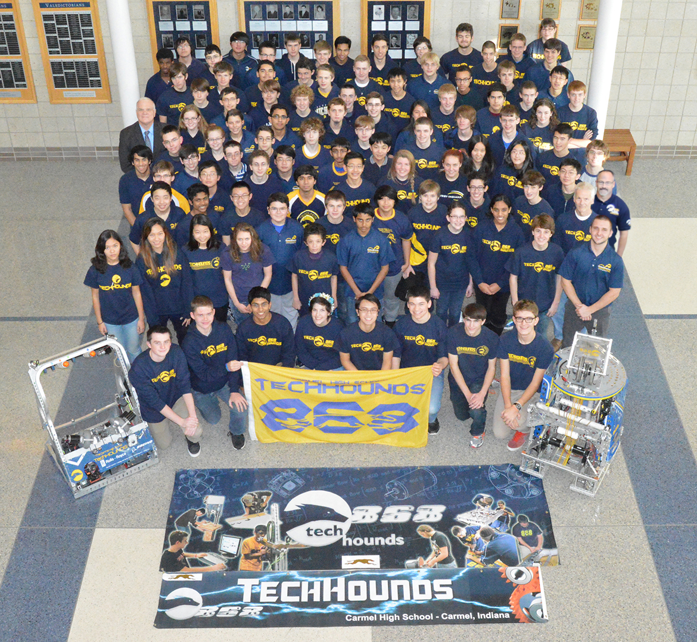

Team
 Photo by Joie Li
Overview

The Carmel High School TechHOUNDS, FRC Team 868, is a high school robotics team that participates in the international FIRST Robotics Competition. TechHOUNDS was founded thirteen years ago by Carmel High School architecture teacher Mr. David Smith. Since 2001, TechHOUNDS has grown from 20 students to a whopping 92 committed young adults. While we are a student driven team, Team 868 is lucky to be mentored by 38 professional engineers, parents, teachers, and alumni who foster technical and professional skills.
The TechHOUNDS strive to provide every member on Team 868 with an educational and stimulating experience. Teamwork, Education, Character, and Hard work form the "Tech" in every TechHOUND. This isn't just a chance to learn about robots and engineering--it’s a chance to build character and teamwork skills. Our club surpasses the social walls of high school; our diverse group of students from grades 9-12 have the opportunity to meet others who share a passion for hands on learning.
In 1992, FIRST began offering annual international robotics challenges for high school students. Every year, FIRST robotics teams take part in the “build season” where they have just six weeks to design, build, and test a robot that can compete in the challenge for that season. After the build season, teams travel to multiple competitions all around the world in the hopes of qualifying for the international FIRST Robotics Championship in St. Louis, MO. This year, Team 868 will participate in the Boilermaker Regional at Purdue University, Crossroads Regional at Rose-Hulman Institute of Technology, the Queen City regional in Cincinnati, and, if we qualify, the St. Louis International Championship.
In our thirteen years of action, we have accumulated a vast array of awards and honors. A few highlights include the Woodie Flowers Award, which was awarded to our founder, Mr. David Smith, recognizing his invaluable role as a mentor. In 2013, we won first place at three regional competitions, and advanced to the international competition where we ranked as the 15th best robot overall. The TechHOUNDS also received the Engineering Inspiration Award at the 2012 Boilermaker Regional at Purdue University.
The TechHOUNDS are always striving to go above and beyond, both in the classroom and on the playing field. We look at each new season as an opportunity to further develop the team, and recognize that we are building the engineers of tomorrow.
Community Outreach
Team 868 has been involved in multiple community-aimed endeavors. One of these includes FIRSTEP, by which we reach out to the younger generation to instill them in an experience driven towards teamwork, creativity, and hands-on learning. Throughout the year, our team occasionally works on other projects. We have made a set of award podiums for the Special Olympics with ramps for wheelchairs, and we also present our robot and other works to different areas in the community, such as the Carmel Clay Public Library and district schools.
Members and Supporters
Our team is comprised of high school students, teachers, engineers, technical specialists, and volunteers. Families of our members and mentors as well as alumni are a major support group of ours as we compete each year. Of course, Team 868 would not exist without our corporate sponsors as well, who recognize the importance of this endeavor and are truly making an investment into the future.
We thank everyone involved with our team for their time, energy, material resources, and contributions!
© 2015 Carmel High School/Boeing/Delphi Foundation/Rolls-Royce